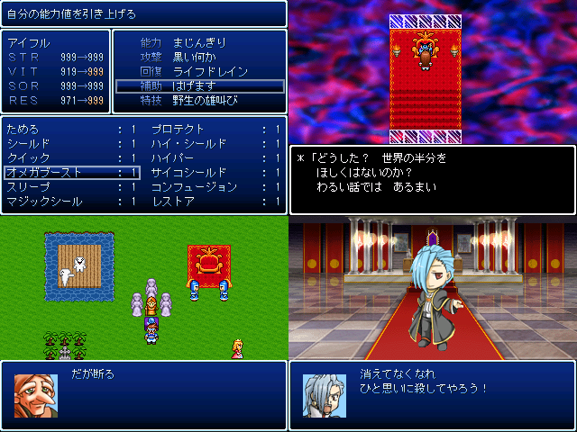

こ
【コメント】
＿＿＿_
／ ＼ ／＼ ｷﾘｯ
. ／ （ー） （ー）＼
／ ⌒（__人__）⌒ ＼ 凝りに凝った自慢のデフォ戦をお楽 しみください！
| |r┬-| |
＼ `ー'´ ／
ノ ＼
／´ ヽ
| ｌ ＼
ヽ -一''''''"~~｀`'ー--､ -一'''''''ー-､.
ヽ ＿＿＿＿(⌒)(⌒)⌒) ) (⌒＿(⌒)⌒)⌒))
＿＿＿_
／_ノ ヽ､_＼
ﾐ ﾐ ﾐ oﾟ(（●）) (（●）)ﾟo ﾐ ﾐ ﾐ
/⌒)⌒)⌒.::::::⌒（__人__）⌒:::＼ /⌒)⌒)⌒)
| / / / |r┬-| | (⌒)/ / / /／ だっておｗｗｗｗｗｗｗｗｗｗｗｗｗｗｗｗｗｗｗ
| :::::::::::(⌒) | | | ／ ゝ :::::::::::/
| ノ | | | ＼ / ） /
ヽ / `ー'´ ヽ / ／ バ
| | l||l 从人 l||l l||l 从人 l||l バ ン
ヽ -一''''''"~~｀`'ー--､ -一'''''''ー-､ ン ヽ
＿＿＿＿(⌒)(⌒)⌒) ) (⌒＿(⌒)⌒)⌒))
これはカンストしそうなデフォ戦だ！